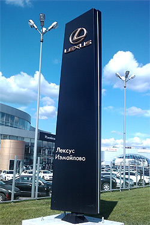

<section class="product page__global">
  <div class="product__inner">

    <h1 class="product__title page__title">Реклама
    </h1>
    <ul class="breadcrumb">
      <li class="breadcrumb__item">
        <a class="breadcrumb__link" href="index.html">Главная</a>
      </li>
      <li class="breadcrumb__item">
        <a class="breadcrumb__link" href="product.html">Продукция</a>
      </li>
      <li class="breadcrumb__item">Реклама
      </li>
    </ul>

    <div class="wrapper">


      
      <p class="page__text">
        Композиционные материалы сочетают в себе небольшую плотность, высокую прочность, низкую теплопроводность, устойчивость к агрессивным химическим реагентам, ультрафиолету и другим неблагоприятным климатическим факторам. Именно поэтому в последнее время композиты и особенно стеклопластик получили такое широкое применение в разных областях промышленности.
      </p>
      <p class="page__text">
        Из композиционных материалов сегодня производят изделия, от которых требуется повышенная прочность при малом весе и устойчивость к внешним воздействиям. Маловероятно, чтобы столь необыкновенный материал не был взят на вооружение рекламной индустрией, динамично реагирующей на все новое. И, действительно, композиты получили широкое применение в изготовлении разнообразных рекламных конструкций.
      </p>
      <p class="page__subtitle page__text">
        Объемные рекламные фигуры
      </p>
      <p class="page__text">
        Распространенным применением композиционных материалов в рекламе является изготовление объемных фигур. Плоскими изображениями уже никого удивить нельзя, поэтому объемные 3D телефоны, медвежата Барни и сандвичи становятся все более востребованными. Если они талантливо сделаны, мастерски подсвечены, а дополнительно еще и вращаются, лучший вид рекламы придумать сложно. Для производства объемных фигур стеклопластик является идеальным материалом. Он пожаробезопасен, необыкновенно прочен, обладает повышенной устойчивостью к капризам погоды, не подвержен коррозии, имеет малый вес, а главное — ему не страшны выходки вандалов, которые могут испортить дорогостоящую конструкцию. Даже если поверхность повреждена, благодаря высокой ремонтопригодности стеклопластика повреждение устраняется в течении нескольких минут и фигура становится еще прочней.
      </p>
      <p class="page__subtitle page__text">
        Рекламные стелы из стеклопластика
      </p>
      <p class="page__text">
        Еще одной важной сферой применения стеклопластика является изготовление из этого материала рекламных стел. Нередко они устанавливаются на автозаправках, возле торговых центров, офисов компаний или автомобильных салонов, стремящихся подчеркнуть свой статус и солидный подход к ведению бизнеса. Такая рекламная конструкция выглядит более эффектно, чет традиционные бигборды, поскольку стела может иметь сложную конфигурацию и в ее составе могут присутствовать трехмерные элементы. Используя свойства стеклопластика, сегодня можно создавать конструкции практически любой формы, что выгодно отличает их от плоских аналогов. Очень важно и то, что в стеле допустимо использование сменных элементов. Благодаря этому возможно оперативно менять, например, перчень услуг или цены в считанные минуты. Вне всякого сомнения, применение стеклопластика в рекламной индустрии становится все более популярным.
      </p>
      <p class="page__text">
        ООО НПП «ПОЛЕТ» использует накопленный опыт и ведет активную работу по освоению перспективных направлений применения стеклопластика не только в железнодорожном транспорте, но и производстве наружной рекламы нового уровня. Так по заказу автомобильных салонов ЛЕКСУС компанией  серийно изготавливаются  рекламные пилоны трех размеров: 1800 х 450 мм, 2500 х 625 мм, 6000 х 1305 мм (высота х ширина), имеющих сложную трехмерную конфигурацию.
      </p>


    </div>


  </div>
</section>